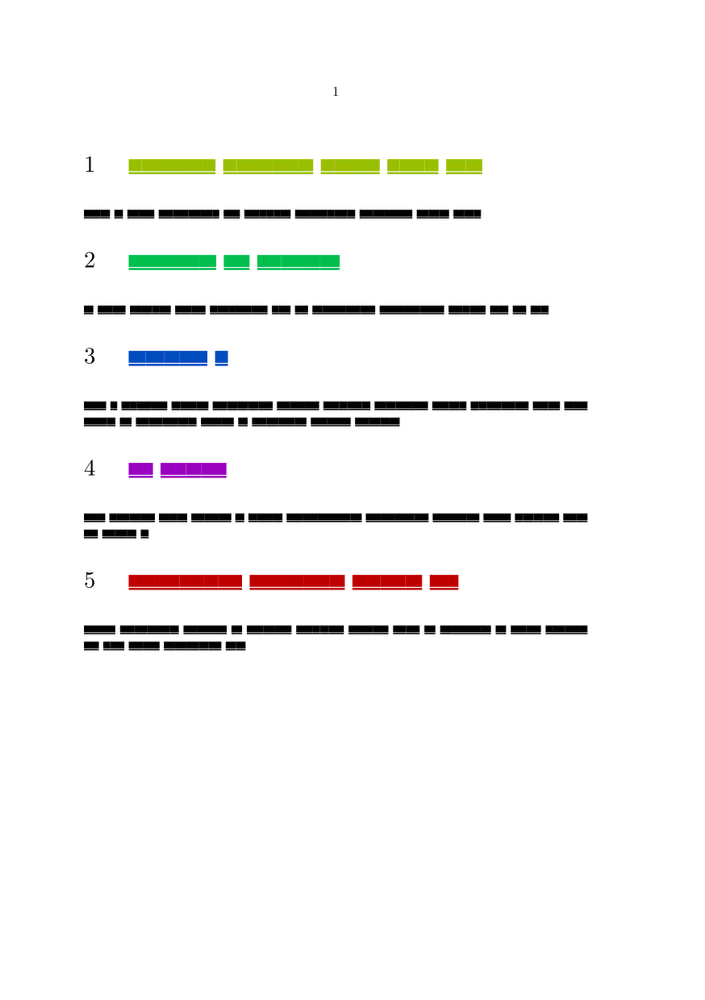

Contents
Summary
Use \somenamedheadnumber to access a section number (expandable).
Settings
| \somenamedheadnumber{...}{...} | |
| {...} | section |
| {...} | previous current next first last |
| Option | Explanation |
|---|---|
| name of the section level e.g. “chapter” | |
Description
Examples
chapter color
-
\usemodule[visual] \startsetups[MyChapterSetup] \definecolor[MyChapterColor][h={\the\numexpr 360*\somenamedheadnumber{chapter}{current}/\somenamedheadnumber{chapter}{last}\relax},s=1,v=.75] \definecolor[fakerulecolor][MyChapterColor] % for \fakewords \setuphead[chapter][color=MyChapterColor] \stopsetups \unexpanded\def\MyChapter#1{ \setup{MyChapterSetup} \color[MyChapterColor]{#1} } \setuphead[chapter][page=no,textcommand=\MyChapter] \starttext \dorecurse{5}{ \chapter{\fakewords{1}{5}} \fakewords{10}{20} } \stoptext
- 
Notes
See also
- strc-sec.mkiv
- \someheadnumber (not expandable)